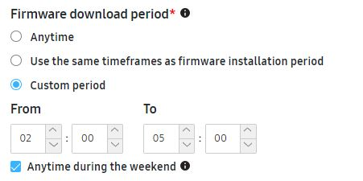
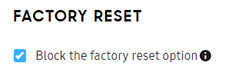

Create a campaign
Last updated June 26th, 2024
Access campaign creation
-
Sign in to the Knox Admin Portal. In the navigation pane, click Knox E-FOTA.
-
Go to Campaign and then click Create Campaign.
Enter campaign information
Basic Info
Set a unique name for the campaign and a description of what’s new in it.
Schedule
-
Campaign period — Set the timeframe when devices in the campaign can start to download and install the update. If you want the campaign period to run indefinitely, select Set a start date only.
-
Firmware installation period — Set the timeframe within the campaign period when the devices in the campaign can start installing the update. This timeframe is based on the device’s timezone.
If you want to test a campaign immediately, set the firmware installation period to the following values:
- From — 00:00
- To — 24:00
Click Anytime during the weekend to allow firmware installation anytime during weekends. Unselected by default.
Devices will start installation during this period, but there is no guarantee that installation will end within this period.

-
Firmware download period — Set the timeframe within the campaign period when the devices in the campaign can start downloading the update. You can allow downloads to occur at one of the following periods:
-
Anytime: Allow firmware download at any time
-
Use the same timeframes as firmware installation period: Set the firmware download period to be the same as the firmware installation period.
-
Custom period: Set the firmware download period to be different from the firmware installation period. Click Anytime during the weekend to allow firmware download anytime during the weekend.

-
-
Installation reminder message — Set how long the installation reminder is displayed, in minutes. The maximum display time is 43,200 minutes (30 days). Default value is 5 minutes. Deselecting Keep device on while installation reminder is displayed will let the screen time out even when the message is active, minimizing battery drain.
Power cycling a device resets the duration timer. Also, the timer remains unaffected by changes to the device’s clock.
If the duration is between 0 and 5 minutes, firmware updates will trigger seamlessly and there will be a minimal amount of time lost between successive updates. Higher durations ensure the device user is notified — through the installation reminder message — before the firmware installs.
Alternatively, select Do not display if you don’t want the device user to see an installation reminder.
-
Postpone installation — Configure these settings if you want to allow the device user to postpone the installation. Set the maximum number of times they’re allowed to postpone the installation and the duration between reminders.
Additionally, you can allow the device user to schedule firmware installation by selecting Allow the device user to postpone installation. They can then postpone firmware installation for 1 to 24 hours.
If they postpone installation, the next reminder message will show after the duration they select, regardless of the Period to postpone you set for the campaign. However, the period you chose takes precedence if the device user instead taps Remind me later.
After the installation reminder period elapses, any pending firmware installations begin immediately. Lastly, selecting Do not display triggers these installations without notifying the device user.
Network and Speed
Download network — Select Basic or Advanced as the download network that devices in the campaign would use for firmware downloads.
Basic
-
Select Wi-Fi or Ethernet, or Any (Wi-Fi, Mobile, or Ethernet) as the network type.
-
Any(Wi-Fi, Mobile, or Ethernet) provides additional download settings:
-
Select Download allowed while roaming to allow firmware downloads while roaming.
-
Select Switch to Wi-Fi or ethernet when firmware size is over Enter size MB to switch the network type to Wi-Fi or Ethernet when the firmware download size exceeds the specified size.
-
Advanced
-
Select one or more network types among Wi-Fi, Mobile, or Ethernet
-
Set the priority order of the network types by clicking
-
If you select Mobile as the network type, you can also configure download settings related to data consumption:
-
Select Download allowed while roaming to allow firmware downloads while roaming.
-
Select Switch to Wi-Fi or ethernet when firmware size is over Enter size MB to switch the network type to Wi-Fi or Ethernet when the firmware download size exceeds the specified size.
-
You can set the download speed of an SSID up to Enter download speed MB. If you add an SSID list, this download speed only applies to devices that connect to SSIDs excluded from the SSID list you added.

SSID throttling
Click SSID throttling to limit the download speed of up to five SSIDs, as follows:
- Click Add Wi-Fi SSID > Enter SSID > Set the download speed up to Enter download speed MB > Add
If the SSID list already contains SSIDs, click Add another row to add a new SSID, and click Edit to make changes to any SSID. Furthermore, unselecting SSID throttling after adding SSIDs will save the added SSIDs and display them only when you click SSID throttling again.
SSID throttling is automatically disabled if a campaign is created without adding any SSIDs.
SSID restrictions
Click SSID restrictions to block or approve downloading firmware over specific SSIDs. More importantly, you can configure blocklists and allowlists having up to 50 SSIDs each, as follows:
-
Select Allowlist to approve firmware downloads only over the allowlisted SSIDs. Similarly, you can select Blocklist to block firmware downloads over the blocklisted SSIDs. Blocklist is selected by default
-
Click Add Wi-Fi SSID > Enter description > Add.
If the SSID list already contains SSIDs, click Add another row to add a new SSID, and click Edit to make changes to any SSID. Furthermore, unselecting SSID restrictions after adding SSIDs will save the added SSIDs and display them only when you click SSID restrictions again.
All SSID restrictions are automatically disabled if a campaign is created without adding any SSIDs.
Device condition

You can specify the following device conditions required for firmware installation.
- Only install firmware if device battery life is above a specified amount.
- Only install firmware if the device is connected to a charging dock.
- Only install firmware if Knox E-FOTA is instructed to do so by a third-party app.
-
Contact your Samsung administrator to enable this setting.
-
This setting takes priority over other campaign firmware installation conditions. Once Knox E-FOTA receives the firmware installation event, it will proceed to install firmware as long as the battery life is over 20%, there is sufficient storage, and the device isn’t in a phone call. Other firmware installation conditions such as postpones, time periods, and device charging are ignored when this setting is configured.
The following java code sample shows how a third-party app can trigger firmware updates.
public class SimpleActivity extends Activity { private final String UPDATE_FIRMWARE = "com.samsung.android.knox.intent.action.UPDATE_FIRMWARE"; private final String KE_PACKAGE_NAME = "com.samsung.android.knox.efota"; void requestUpdateFirmware() { Intent intent = new Intent(UPDATE_FIRMWARE); intent.setPackage(KE_PACKAGE_NAME); sendBroadcast(intent); } }
-
Factory Reset
Specify whether you want to block end users from performing a factory reset on the device.

Block the factory reset option disables factory reset for all devices in that campaign, including those managed by an EMM. If you previously configured factory reset for your device in an EMM, ensure you unconfigure the policy first. As soon as a device is assigned to a campaign with Block the factory reset option enabled, factory reset is disabled even if the campaign is scheduled to start at a later date. If the campaign expires, factory reset remains disabled on the device until you unassign it.
Support Contact Details
Enter a phone number and email address end users can contact for support. You can also set these values as the default contact information for future campaigns.
Assign devices and firmware
Fill in the Assign Devices and Firmware table on the campaign creation page. Each row of the table represents a device group, that is, a model and sales code pair. The CSC of each device group is pre-populated beneath the sales code. For device groups that have multiple possible CSCs, a list is available instead, which allows you to select a CSC for that device group. There are 2 ways of populating the firmware table on a campaign.
- Assign devices — The firmware table will be automatically populated with the combinations of device model, sales code, and CSC of the devices you assigned. Then, you can choose a firmware policy for these devices.
- Add manually — Manually add a combination of device model, sales code, and CSC, without assigning a device, then choose a firmware policy for this combination.
You can also update multiple firmware policies at once if you want to change the firmware versioning on multiple rows of the firmware table simultaneously.
There are a few ways you can get the CSC of your devices on Knox E-FOTA:
- On the Devices tab, you can customize the table columns to include each device’s Consumer Software Customization (CSC). When you export the device list to a CSV file, the CSC info is also included.
- When viewing a device’s Device details, you can obtain that device’s CSC.
- When creating, editing, and viewing a campaign, you can obtain the CSCs of devices in that campaign.
Assign devices
Assign devices to this campaign:
-
Click ASSIGN DEVICES.
-
On the Assign devices page, select one or more devices to assign to this campaign.
By default, the device list is pre-filtered to show only the following:
- Devices that aren’t assigned to any campaign.
- Devices assigned to expired or canceled campaigns.
If you want to select a device currently assigned to an active campaign, click Clear Filters.
Devices that are not enrolled are excluded from the device list. Only enrolled devices can be assigned to a campaign.
When you download the device list as a CSV file, the file will contain the version of the Knox E-FOTA client app installed on each device.
-
Click Assign. This campaign’s firmware table is populated based on the devices you assigned.
-
For each row in the table, click EDIT and choose a firmware version policy. See Choose firmware policy.
Add Manually
Manually add a combination of device model, sales code, and CSC to the firmware table. This allows you to create a campaign with a firmware policy without assigning devices to it.
-
If your firmware table is empty, click ADD MANUALLY. Otherwise, click ADD ANOTHER ROW beneath the table.
-
Select a combination of device model, sales code, and CSC.
The selection of device model, sales code, and CSC is taken from your pool of enrolled devices. If you have no enrolled devices, you won’t be able to make a selection and create a firmware policy for this campaign.
-
Choose a firmware version policy for this combination of device model, sales code, and CSC. See Choose firmware policy.
Choose firmware policy
Under Firmware version, choose one of the following firmware version policies:
-
Choose Latest firmware if you want the campaign to automatically push the latest firmware version to the assigned devices. Additionally, select one of the following:
-
Any — The latest firmware, regardless of its OS version, is pushed to devices.
-
Up to — The latest firmware, within a particular OS version, is pushed to devices.
If no firmware meeting your criteria is available for devices of a particular combination of model and sales code, an error is displayed.If you select this option, you may not receive security patches included in the latest firmware of the latest OS version.
-
-
Choose Lock current firmware if you want to prevent any other firmware from being installed on the corresponding devices.
-
Choose Select from firmware list if you want to select a specific firmware version to push to the corresponding devices. Then, select the target firmware on the next page. Only the firmware versions that are compatible with that device group are available, given the group’s model, sales code, and CSC.

Update multiple firmware policies at once
You can apply firmware policies to all devices of a particular model with one or more sales codes, without having to manually push updates for each row individualy. To do this, select all rows you want to update in the firmware table, and click EDIT FIRMWARE POLICY.
If you’re setting firmware policies for multiple rows at once, you can’t choose the Select from firmware list policy.
The following table captures the different policies you can apply to devices if you’ve selected multiple rows in the firmware table.
| Number of rows selected | Firmware policy you can select | Firmware version |
|---|---|---|
| 2 or more | Latest firmware | 1Up to |
| Any | ||
| Lock current firmware | N/A |
1Only available if all selected devices are of the same model.
After you add a device model to Knox E-FOTA for the first time, it may take a few hours for the list of applicable firmware versions to become available. If you don’t see the firmware list for a device model you’ve just added, try again after a few hours.
If Knox E-FOTA is in the process of syncing the firmware list for your assigned devices, you’ll have to wait until the firmware sync is complete. You’ll receive a notification by email when the firmware is ready to be used.
If you purchased the Software Customization Services license, you can request custom firmware from a Samsung admin. Once the custom firmware is delivered, you’ll find it on the Custom Firmware tab when choosing your target firmware.
If you have purchased support for Enterprise Security Patches (ESP), you can select them as target firmware in the firmware list.
Gradual campaign rollout
Optionally, you can set a gradual campaign rollout. A gradual rollout means that once the campaign begins, small batches of devices update their firmware every day, rather than all devices on the campaign updating at the same time. The campaign then continues to roll out updates progressively until all devices are updated by the campaign’s end date. Gradual rollouts allow you to troubleshoot issues with firmware rollout as they arise, so that erroneous or vulnerable patches aren’t immediately propagated to all devices at once.
The rollout rate defines the size of each device batch, which is the percentage of devices in the campaign that update each day.
In determining the rollout schedule, each device is given a random start date. For example, a rollout rate of 20% triggers firmware updates on a randomly selected 20% of devices on the first day, the next 20% the day after, until, by the fifth day, 100% of the devices are updated.
Gradual campaign rollout exhibits the following behavior:
-
Changes to either the rollout rate, target firmware version, or campaign status during gradual rollout will reset the rollout start date of all assigned devices.
-
Rolling out a campaign to devices newly assigned during the gradual rollout doesn’t reset the rollout start date of devices that were already assigned the campaign, preventing any delay in pushing firmware updates.
Activate your campaign
Once you’ve finished entering your campaign information, click Create and Activate. A notification confirms that the campaign was created, and the campaign is added to the Campaigns list.
- A device that is off during this campaign period will have a pending status until the device is turned on. If the device remains off during the duration of the campaign period, it won’t receive the command to update.
- In some cases, especially when upgrading devices to a major Android OS version, several firmware updates are installed incrementally to reach the target firmware version, even if you only applied one campaign. This process results in devices automatically rebooting multiple times, corresponding to the number of firmware updates that actually occurred.
You can also:
- Duplicate an existing campaign and further customize it for each device model you assign it to. A duplicated campaign’s name contains a copy suffix, which you must edit to uniquify. All the other settings of the source campaign are copied.
- Assign devices to an existing campaign. See Perform common operations on devices.
On this page
Is this page helpful?